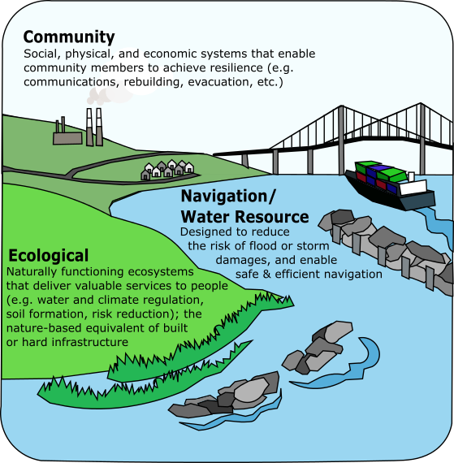
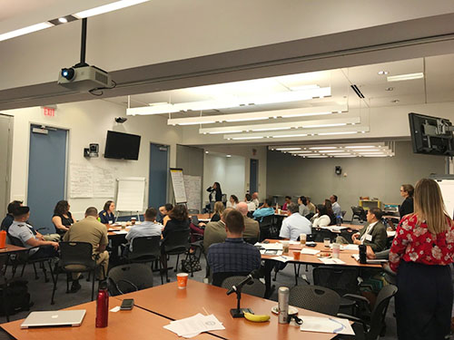

"The Nation's critical infrastructure provides the essential services that underpin American society. Proactive and coordinated efforts are necessary to strengthen and maintain secure, functioning, and resilient critical infrastructure—including assets, networks, and systems—that are vital to public confidence and the Nation's safety, prosperity, and well-being."
from Presidential Policy Directive 21: Critical Infrastructure Security and Resilience

The Marine Transportation System operates within multiple other systems that include ecology, the community, and water resource management, each of which can impact the resiliency of the MTS. (Credit K. Touzinsky/USACE)
Purpose
The MTS Resilience IAT (R-IAT) was established to focus on cross-Federal agency knowledge co-production and governance in order to incorporate the concepts of resilience into the operation and management of the U.S. Marine Transportation System. For the purposes of this team, resilience is defined as the ability to prepare and plan for, resist, recover from, and more successfully adapt to the impacts of adverse events.
Value
The R-IAT seeks to affect future resilience policy and aid in delivering enhanced resilience programs through identifying, coordinating, and leveraging complementary Federal investments and activities related to MTS resilience.
Integrated Action Team Leads
U.S. Army Corps of Engineers
National Oceanic and Atmospheric Administration
Participating Agencies
Bureau of Safety and Environmental Enforcement
Environmental Protection Agency
National Geospatial-Intelligence Agency
National Oceanic and Atmospheric Administration
U.S. Army Corps of Engineers
U.S. Coast Guard
U.S. Department of Homeland Security
U.S. Maritime Administration (DOT)
U.S. Navy
U.S. Transportation Command
Activity and Milestones

Interagency workshop to collect insights in Federal maritime response and resiliency during the 2017 Hurricane Season
October 2020: Presented a Transportation Research Board (TRB) webinar on A Resilient Path Forward for the Marine Transportation System on findings from the 2017-2019 hurricane seasons.
July 2020: Reported to the CMTS Coordinating Board on findings on agency actions, best practices, and preliminary recommendations for MTS agencies to increase preparedness for multi-hazard scenarios.
May 2020: The RIAT hosted a team meeting to gather insights from members who had direct knowledge of their agency's actions to assist in the pandemic response and/or efforts that agencies are undertaking to prepare for the 2020 hurricane season. These members gave presentations on their agencies COVID-19 actions and unique challenges and best practices during the pandemic response.
February 2020: MTS Resilience IAT hosted a virtual workshop entitled "Virtual Workshop - Impacts to the Marine Transportation System during the 2018 and 2019 Hurricane Seasons" as a follow up to the May 2018 workshop.
July 2018: Reported to the CMTS Coordinating Board on findings for a review of MTS response and actions to increase resilience after the 2017 hurricane season
May 2018: MTS Resilience IAT hosted a workshop entitled "Charting a Path toward a More Resilient MTS: A Workshop to Examine Lessons Learned from the 2017 Hurricane Season". This workshop included participants from DHS, NOAA, MARAD, Navy, USACE, NGA, and USCG, including individuals from regional offices impacted by the 2017 hurricane season.
April 2018: Final update on University of Rhode Islands' contracted study entitled "Towards a Comparative Index of Seaport Climate Vulnerability: Developing Indicators from Open Data."
Fall 2016: Develop a compendium and gap analysis of tools, metrics, and indices in Federal agencies and NGOs related to MTS Infrastructure Resilience.
Summer 2016: Select a port region to evaluate a comprehensive approach infrastructure resilience and vulnerability.
May 2016: Published Journal Paper and Fact Sheet: Feedback on joint-agency (USACE-NOAA) coastal resilience workshop.
May 2016: Conducted a workshop with the R-IAT and researchers from University of Rhode Island (URI) to gather data and discuss relevant decisions for climate change resilience relevant to the MTS, especially ports.
April 2016: Drafted a logic model to clarify R-IAT long-term goals along with short-term actions. The logic model is intended to guide new additions to R-IAT work plan.
December 2015: Developed a summary public-facing
Fact Sheet from the MTS Resilience Factors Matrix (RFM) that outlines active participation and interests from each R-IAT agency with consideration of environmental and non-environmental resilience factors. The detailed version of the RFM fact sheet will remain a resource for the R-IAT.
October 2015: Summarized results of MTS Resilience Factors ranking, including identification of agency activities, and discussion of agency priority interests in a 2015-2016 work plan for R-IAT members as approved by the Coordinating Board.